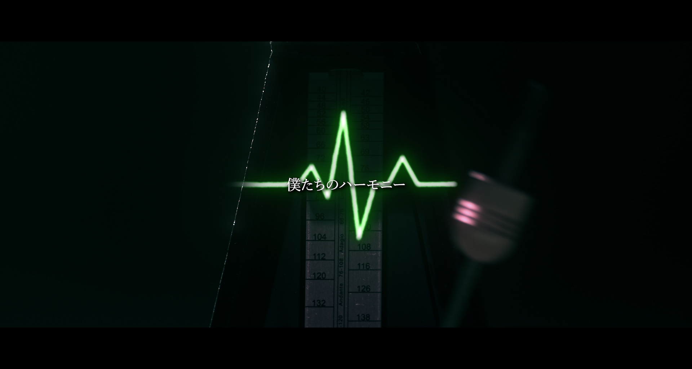

세계관을 읽다.
브랜드와 기업, 아티스트가 전하고 싶은 이야기를 이해하고 목적에 맞는 콘셉트와 장면을 기획합니다.
ABOUT STUDIO HOLLIN

ALL-IN-ONE PRODUCTION
브랜드필름부터 기업 홍보, 공연과 라이브까지.
기획·촬영·후반 제작·현장 운영을 연결합니다.
OUR VISION
보이지 않는 세계관을
하나의 완전한 경험으로.
좋은 콘텐츠는 목적을 이해하는 기획과 치밀한 제작으로 완성됩니다. 홀린은 고객의 구상을 함께 나누고, 기획부터 제작과 연출까지 일관된 시선으로 연결합니다.
브랜드와 제품의 매력, 기업과 기관의 메시지, 아티스트와 공연의 이야기를 각 프로젝트에 맞는 영상과 현장 경험으로 만듭니다.
HOW WE THINK
브랜드와 기업, 아티스트가 전하고 싶은 이야기를 이해하고 목적에 맞는 콘셉트와 장면을 기획합니다.
영상과 공간, 빛과 소리가 하나의 흐름으로 이어지는 몰입을 설계합니다.
콘셉트에서 제작과 현장 연출까지. 처음의 구상이 관객에게 전해지는 순간을 함께합니다.
OUR PHILOSOPHY
보이는 것 너머를 기획하고,
기대 너머를 완성한다.